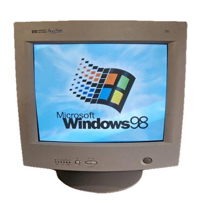
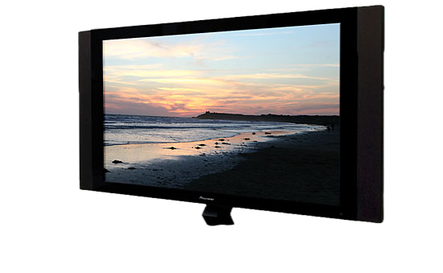
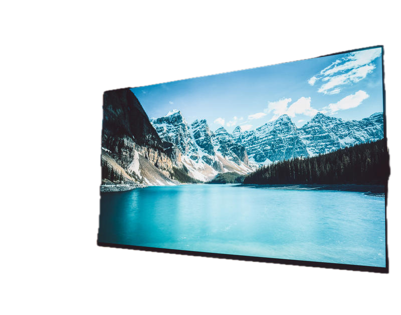
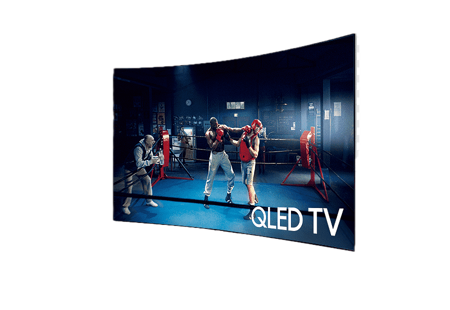

Зал 5 — Эволюция средств отображения информации
Развитие технологий отображения информации: от электронно-лучевых трубок до современных OLED и QLED-дисплеев.
Электронно-лучевые трубки (ЭЛТ)

ЭЛТ-дисплеи стали основным средством отображения информации во второй половине XX века. Использовались в телевизорах, компьютерных мониторах и терминалах. Обеспечивали вывод текста и графики в реальном времени.
Плазменные панели

Плазменные дисплеи использовали свечение газовых ячеек для формирования изображения. Отличались высокой контрастностью и большими размерами экранов. Получили распространение в телевизионных системах.
Жидкокристаллические дисплеи (LCD)
LCD-технология обеспечила переход к компактным и энергоэффективным плоским экранам. Стала стандартом для мониторов, ноутбуков и мобильных устройств.
OLED-дисплеи

OLED-технология использует органические светодиоды, способные самостоятельно излучать свет. Это позволило добиться высокой контрастности, насыщенной цветопередачи и гибких экранов.
QLED-дисплеи

QLED-дисплеи используют квантовые точки для повышения яркости и точности цветопередачи. Технология применяется в современных телевизорах и профессиональных систем визуализации.